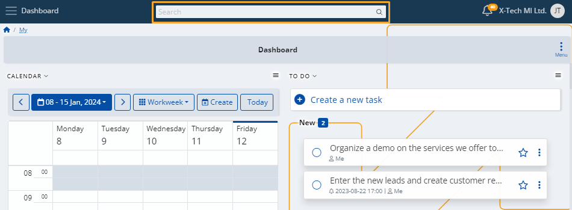
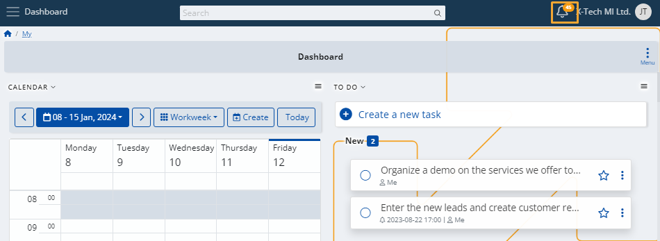
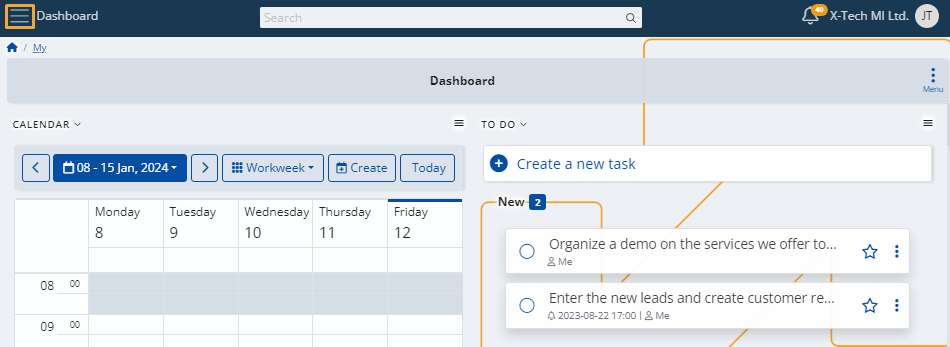
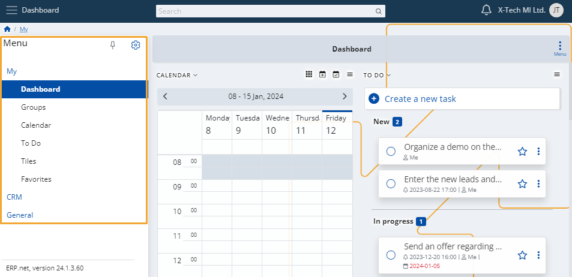
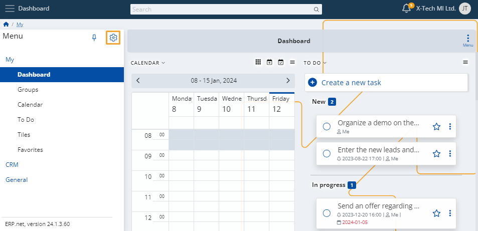
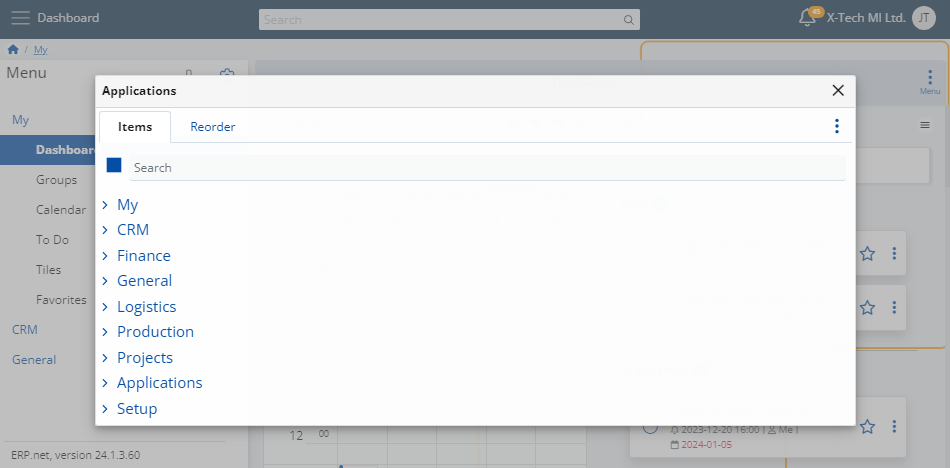
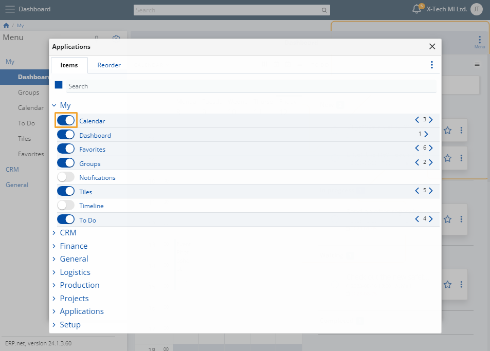
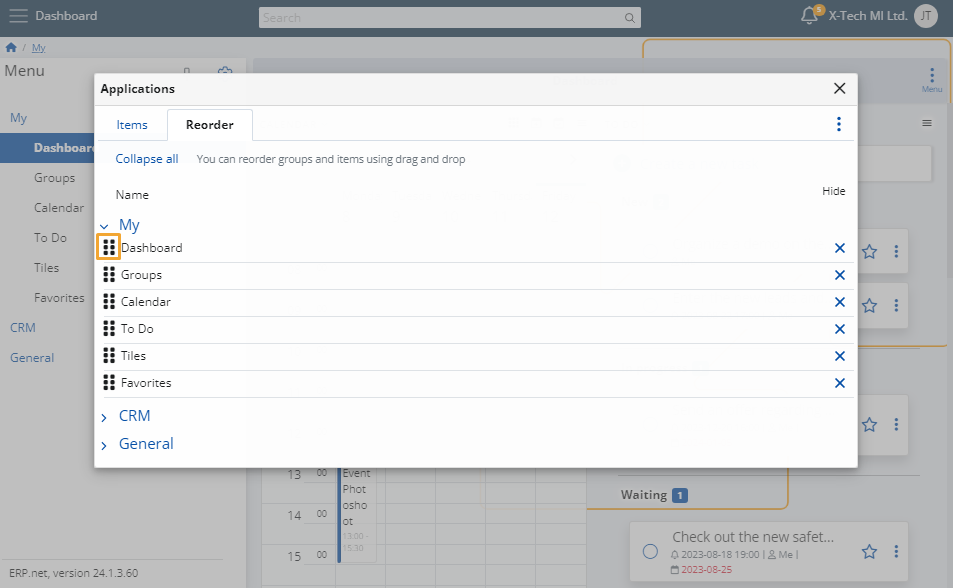
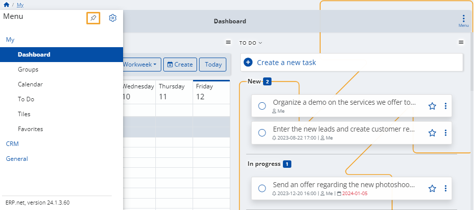

Express
Express is a system which seamlessly unites team collaboration with business operations, allowing you to increase your productivity and achieve better workflow organization.
Its intuitive interface and flexible customization capabilities can be used on-demand, as soon as the need for a meeting to be scheduled or a task to be set arises.
Main features
You can take advantage of several core functionalities in order to better navigate the Express system.
Search bar
Use it to locate specific panels or document creation forms belonging to one or more menu elements.
For example, if you want to create a product group, instead of using the menu to find it, simply write what you need in the search bar.

Notifications
When something related to the system or a favorite item occurs, you will receive a notification for it.
Click the bell icon at the top-right corner to learn what happened.

Menu
Click the button at the top-left corner of the page to expand the main menu.

Express consists of three main modules which are further divided into sub-modules.

Menu customization
Any menu element you don’t need can be hidden on-demand.
You can alternatively reveal more elements than the ones you see by default.
Click the gear button to reveal your options.

You can configure which items are visible in each of the main modules, as well as rearrange their order.

Within the Items tab, click on a slider to hide or reveal an item in the menu.

To change the order of the items in the menu, drag them up or down from the Reoder tab.

Pin
If you want to adjust the reach of the Express menu, click once on the Pin button.
It can also be used to completely collapse the menu.

Get started
Click any of the available modules below to learn more.
Note
The screenshots taken for this article are from v24 of the Web Client.